ドイツ滞在の記録(2022年11月)
現在ドイツの大学院にいます. 内部モデル理論を研究しています.
iphoneで閲覧する場合はリーダーを表示すると読みやすいです.
総集編
サボっていた分の写真だけあげときます.
 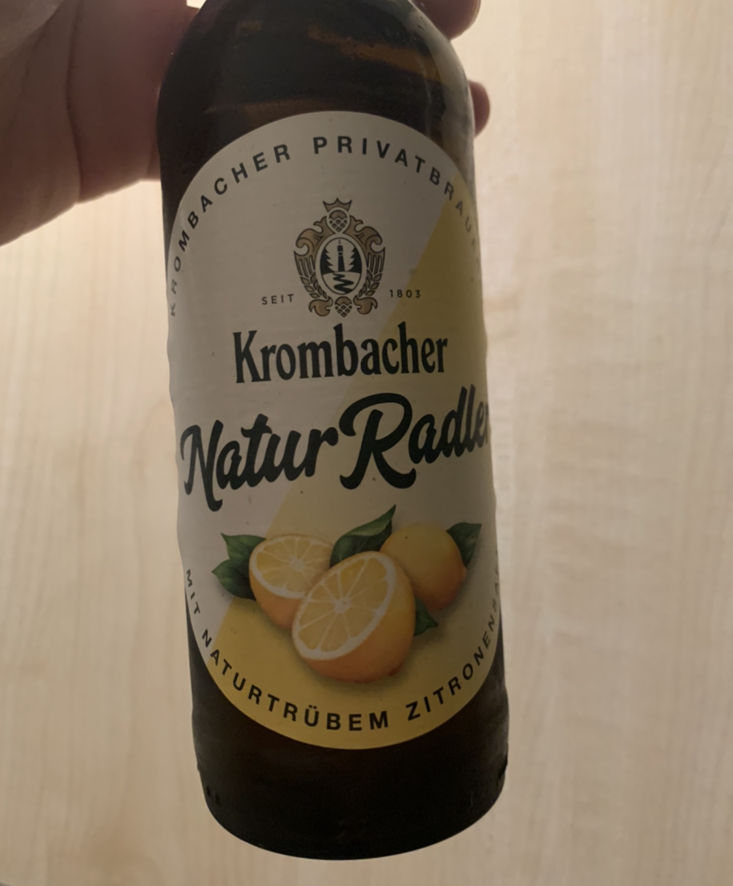
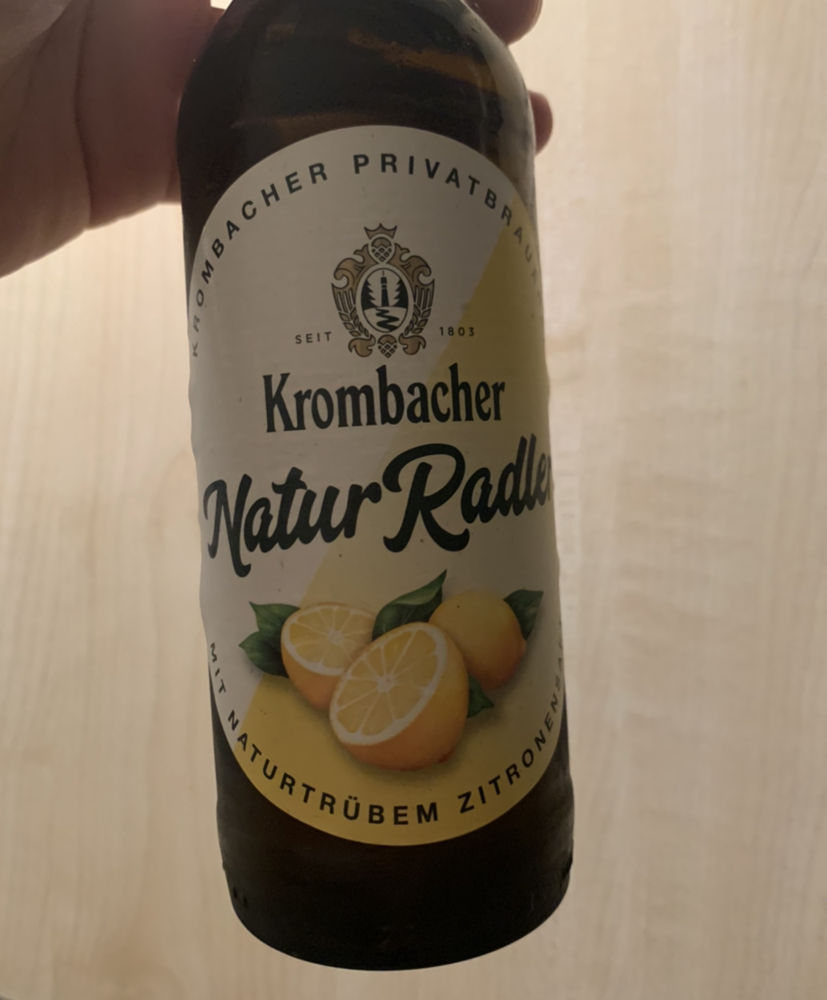

作ったソテーの写真. ソースはスーパーで売ってたキッコーマンのソース. かなりうまい. ビールもレモンの風味でかなり飲みやすい.
 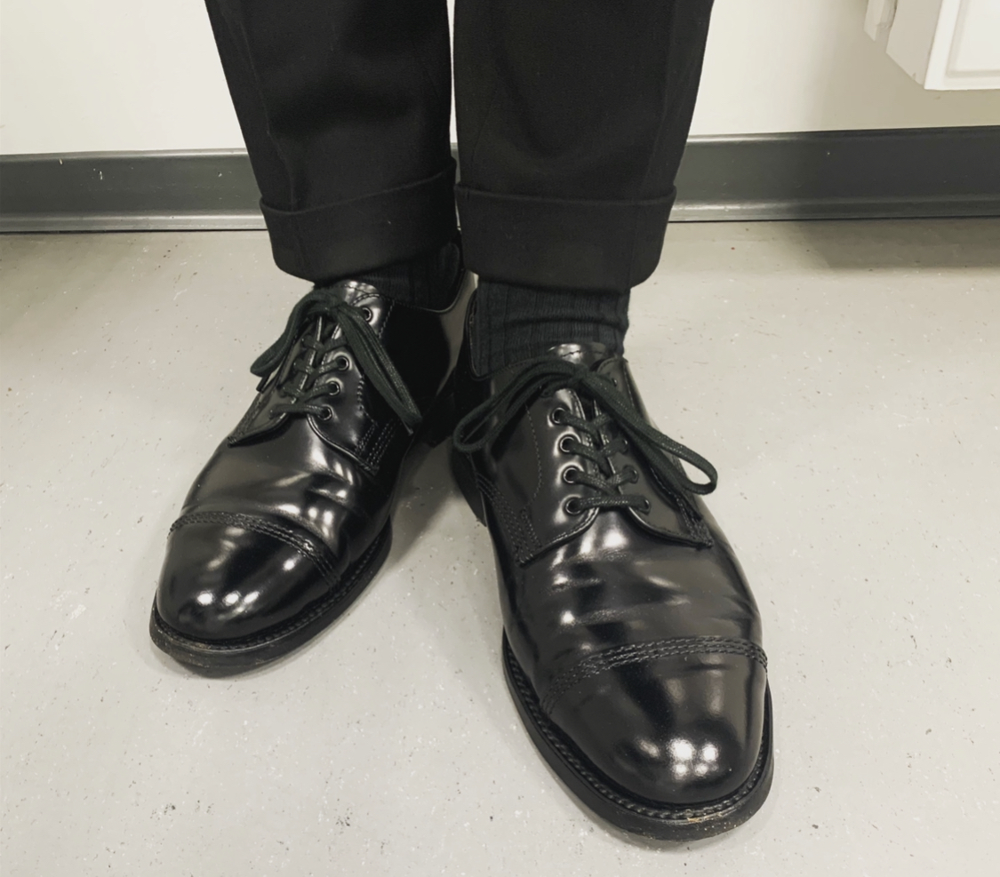
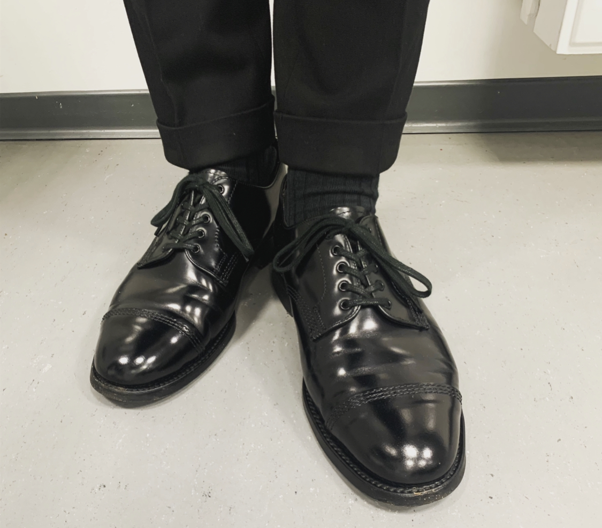
靴.


大学の本校舎. 初めて見た. でかい.
移動式遊園地に行きました. 夜は雰囲気がパーティーのようで楽しかった. 結局ビール飲みながらずっと数学の話していた.
 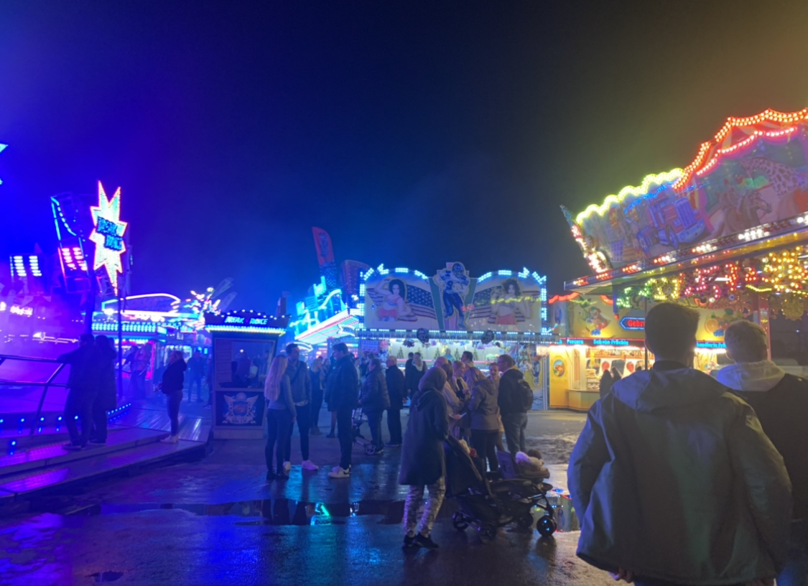
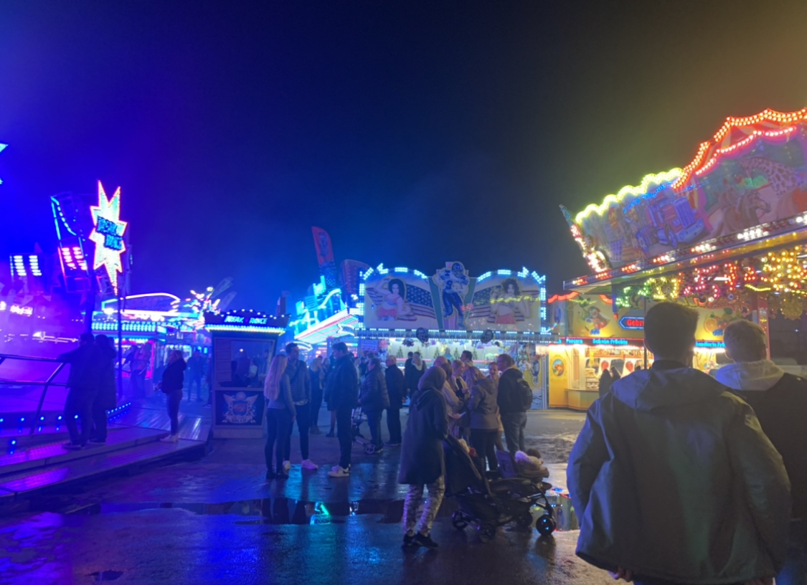
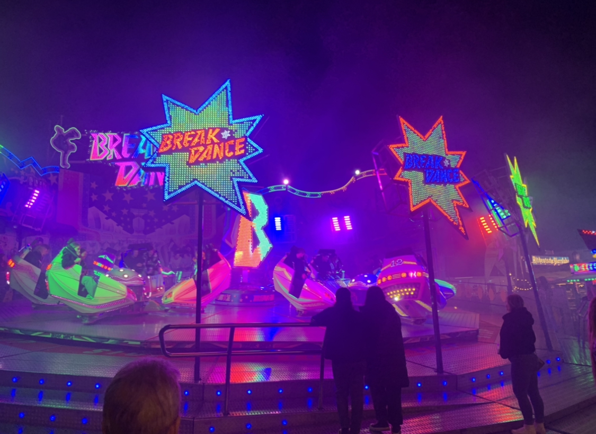


 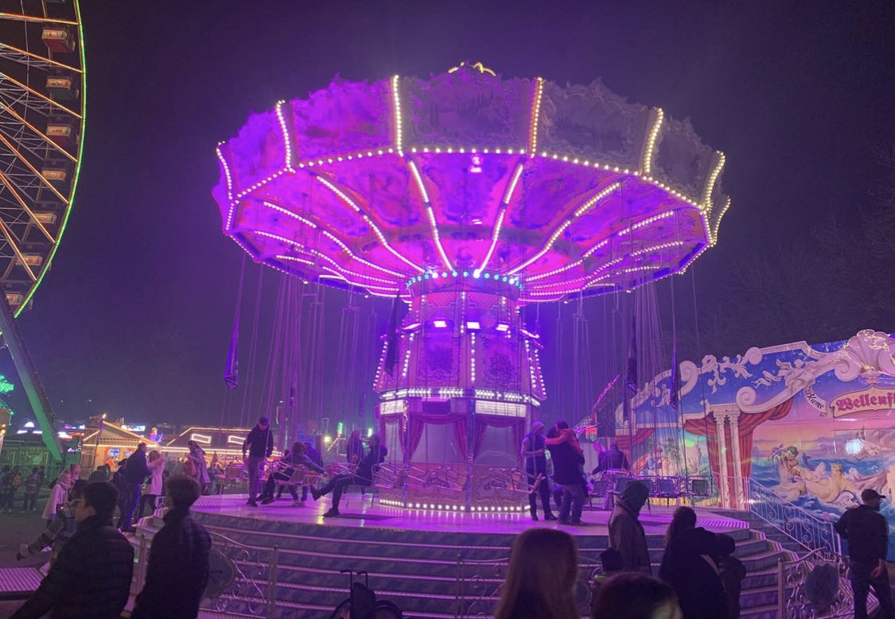
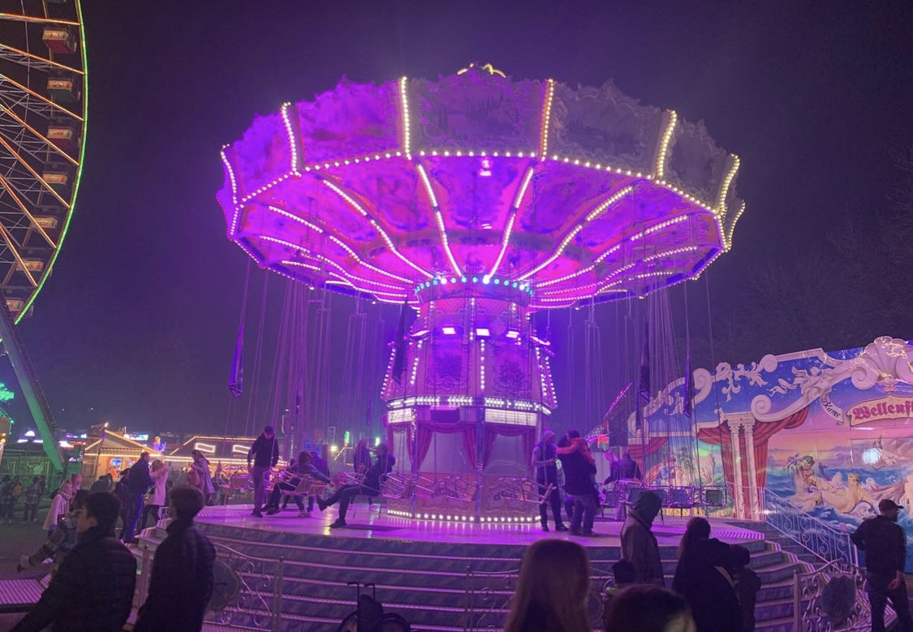
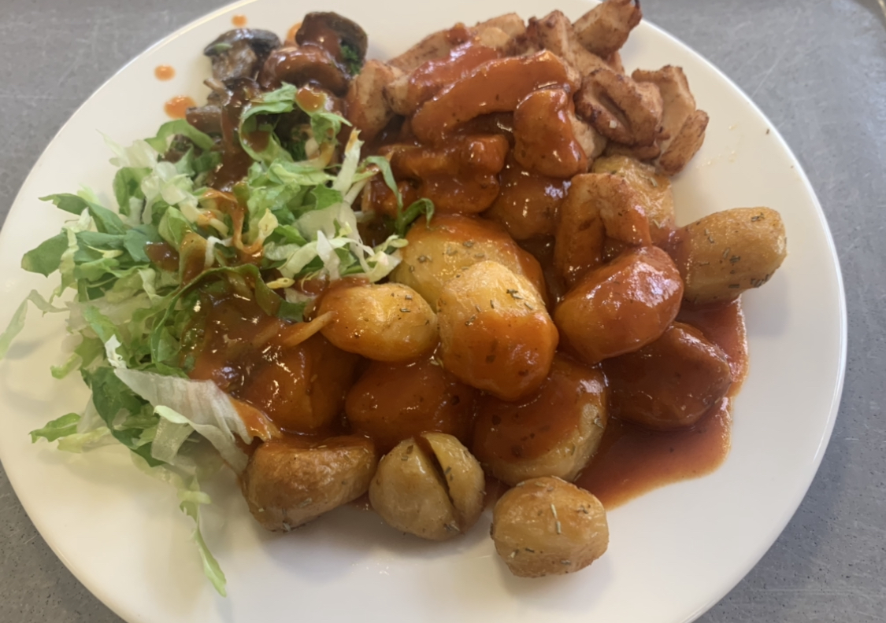
学食. かなりおいしかっった.


ドイツ語のクラスの後, ビール飲みながら数学の話をずっとしていた. 駅の裏にベンチがあったからそこで飲んでいた. M1のsuitable partのsharpとM1^{sharp}の関係性について話していた.

ワインが安かったので買った. 5ユーロだった. 美味しかった. 2日で飲み切ってしまった. サラミとチーズと一緒に楽しんだ.
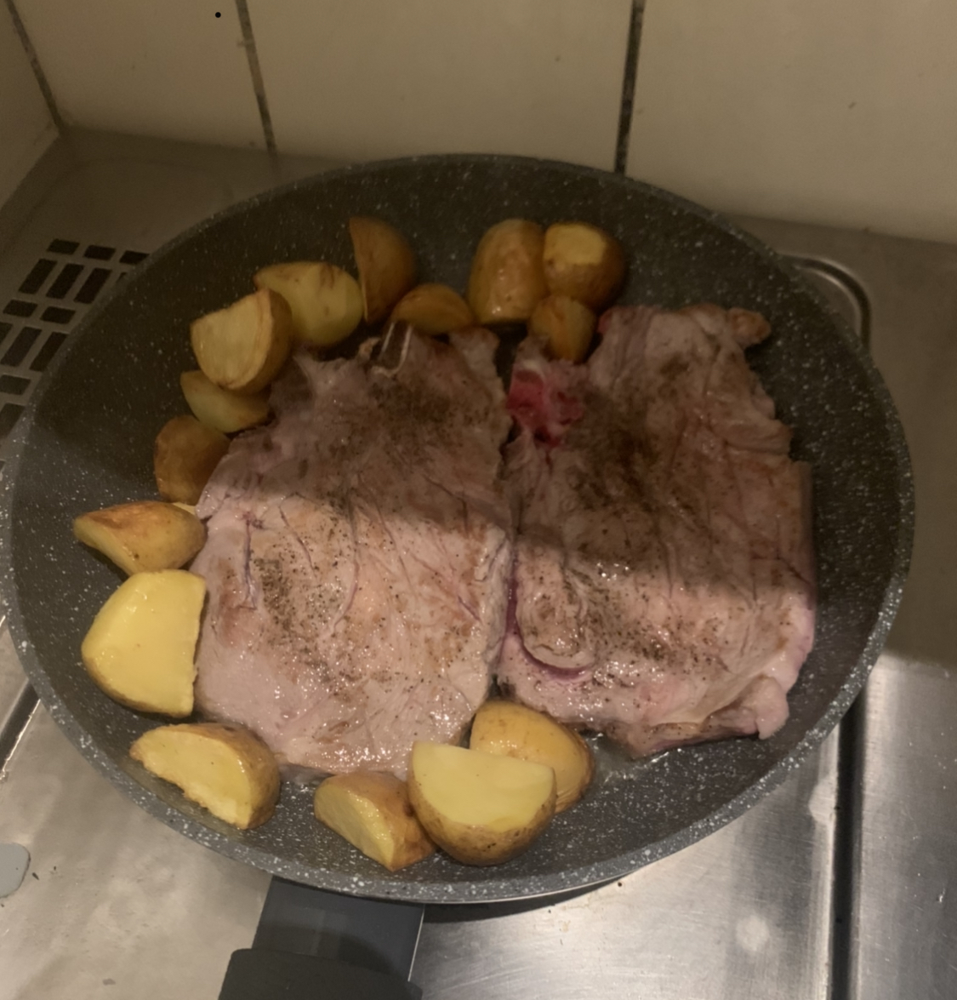
肉を焼いた. でかい肉.

靴を磨いた.
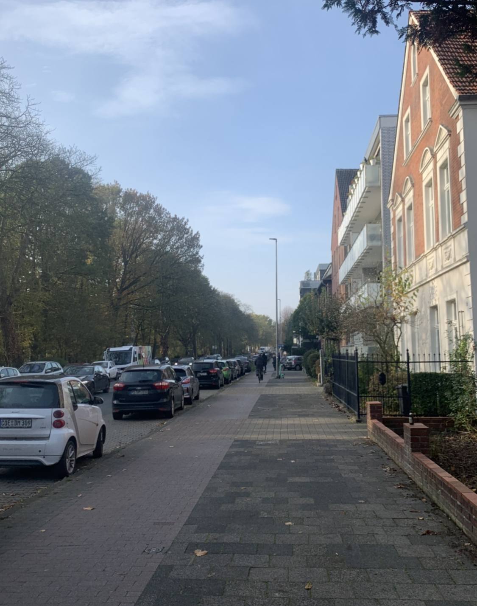

ハツが安かったのでハツを焼いた.
01.11.2022
10月後半なんとなく忙しくて書いていませんでした. ちゃんと書きます.
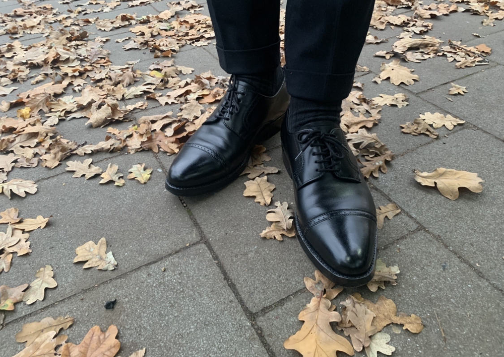
せっかく大学に行ったのに休日で閉まっていた. 残念. 家で数学をした. あと君の名は。を見た.
サイドゴアブーツいいなぁと眺めていた. Uチップかブーツかで迷っている. 12月になるまでに決める.
銀行口座のタイプを課金してワンランクあげた. 月3ユーロで1年間試してみることにした. 送金の手数料がかからなくなり, カードもアップグレードされた.
一番の旨味は1つのアカウントでスペースを複数持つことができ(つまり口座を分割でき)ることだ. とりあえず常に使う口座とは別に貯金用の口座を作ってみた. かなり便利だと個人的には思う.
毎月400ユーロ貯金しているのでそこに置いておこうと思う. (貯金に関してはドイツに来てからちゃんとしている. 帰省や何かあったときのためである. )
貯金用に口座を別に作ってもいいが市中の銀行で開設するの面倒だし, transferが面倒なのでこれでいいかとなっている.
02.11.2022
今日は研究室のセミナーがあった。
精神状態があまりよくない。なぜだろうか。漠然とした不安がある。
とはいいつつも精神状態がずっと良かった時期なんてなかったわけなのでこんなものだろう。
英語での日常会話が下手くそすぎるので上達したい。数学の話はわかるが、普通の会話になるとなかなか難しいものである。
難しい。
図書館でジャルジャル見ていたら友人にセミナー聞いてると思われていた。図書館でジャルジャルを見るな。
04.11.2022
ロジックグループに新しい秘書が来て歓迎パーティーがあった.
そのあとポーランドから来た内部モデル理論の研究者のセミナー発表を聞いた. 1ヶ月ミュンスターにいるらしい. そのあとは研究室の人たちと食事に行った.
イタリアレストランに行った. かなり良いところだった. ビールをたくさん飲んだ.
ぼんやりとした不安.
05.11.2022
家で数学をする.
PDEの講義で出された演習問題を解いた. 調和関数に関する問題だった. 難しくなかったのですぐ終わった.